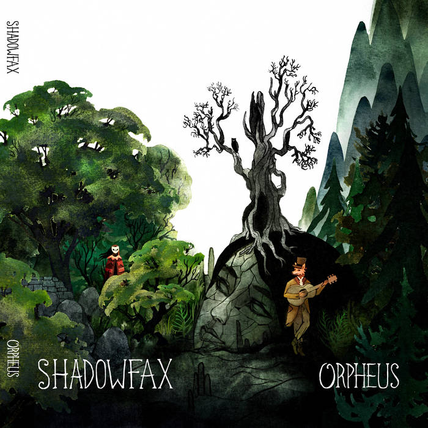

Simon Posluns Music
Banjo, Pedal Steel, Dobro
Sample Recordings


"Past in the Sun" by Mitchell Green (Victoria, BC)
Instruments Played: Dobro, Pedal Steel, Banjo
0:00
0:00
"The Vagrant" by Jeremy Hanlon (Shadowfax: Vancouver, BC)
Instruments: Pedal Steel, Banjo
0:00
0:00

"Summer Silence" by Leigh Wills (Bill Ricky: Halifax, NS)
Instruments: Pedal Steel, Arrangement (Strings)
0:00
0:00
"Spruce Moose" by Tom McGuire (Tom McGuire & the Brassoles: Glasgow, UK)
Instruments: Dobro, Pedal Steel
0:00
0:00

Multi-instrumentalist based out of Toronto, Ontario (Banjo, Pedal Steel, Dobro). Previous musical collaborations include Bill Ricky (Nova Scotia), Shadowfax (Vancouver), Hoss Mountain Stringband (Victoria)